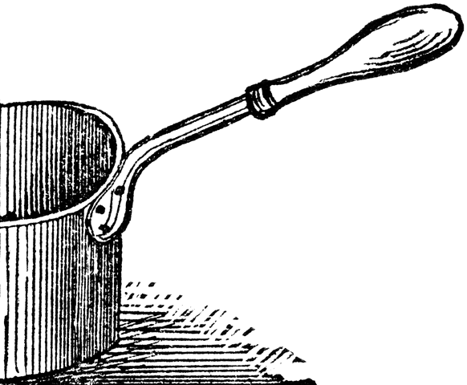
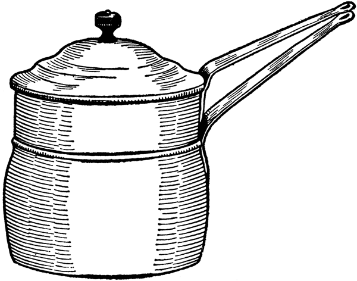

Para la preparación de la mayoría de sopas tradicionales colombianas, los cocineros y recetistas proponen, en primer lugar, tener como principio el «caldo básico», del que parten platos como la sopa de cebada, de avena o de menudencias, el caldo de costilla, los cuchucos, el tradicional «Puchero bogotano», el «Ajiaco» y la «Changua», entre otros. Este caldo básico consiste en agua hervida en un guiso con aceite, una cucharadita de sal, un diente de ajo, un gajo de cebolla larga picada y, ocasionalmente, un poco de tomate picado.
También se le puede agregar cebolla cabezona blanca o roja, apio, perejil liso o crespo, cilantro y zanahoria, más la famosa «sustancia», ya sea de res, pollo, gallina o cerdo. Según el tipo de sopa, la sustancia varía, así como es necesario rectificar la sazón en cada paso, ya sea añadiendo más sal, pimienta o comino, elementos clave de la mayoría de los platos tradicionales.
Cuando al final de la cocción se agrega crema o huevos, debe evitarse hervir de nuevo, pues la sopa se corta. En algunas de las recetas hemos preferido mencionar el modo de preparación del caldo; en otras, hemos omitido este paso y lo mencionamos solamente como ingrediente. En la actualidad podemos ver cómo la sustancia de las sopas ha sido reemplazada por los cubos instantáneos que se consiguen en tiendas, plazas o supermercados.
En honor de un gran cachaco
el sin par Raimundo Rivas
pretendo con ansias vivas
dar el lunes un ajiaco.
José María Restrepo Sáenz.
Invitación en honor del susodicho,
personaje importante de la ciudad
y amigo del historiador.
Mayo 16 de 1927.
[Para 6 a 8 personas]
2½ pechugas de pollo
12 tazas de agua
2 tallos de cebolla
1½ libras de papa sabanera pelada y cortada en tajadas medianas
1½ libras de papa criolla pelada y cortada en tajadas grandes
1½ libras de papa pastusa pelada y cortada en tajadas medianas
4 mazorcas tiernas partidas por la mitad
½ taza de hojas de guascas
4 ramitas de cilantro
½ taza de cilantro picado
2 dientes de ajo
½ taza de crema de leche
½ taza de alcaparras
1 aguacate cortado en tajadas
Sal al gusto
Se pone al fuego una olla grande con el pollo, el agua, la cebolla, el ajo, las guascas y las ramitas de cilantro. Hay quienes opinan que el caldo queda mejor si se le agrega un poco de hueso de costilla de res. Se condimenta con sal al gusto y se cocina hasta que el pollo esté blando. Se retiran la cebolla, el ajo, las guascas y el cilantro y posteriormente el pollo, para desmenuzarlo aparte.
Se le añade al caldo el cilantro picado y las papas, echando primero la papa sabanera, para dar textura del ajiaco; luego las mazorcas partidas y las papas criollas; por último, la papa pastusa o paramuna, sin dejarla desatar completamente, y las hojas de guasca sin los palos. Se deja hervir por unos 30 minutos y se rectifica la sal. Si se siente muy espesa, se añade un poco más de agua. Se puede servir caliente en una sopera o en cazuelas de barro negro, y acompañado del pollo desmenuzado, la crema de leche, las alcaparras y el aguacate.
[Para 6 personas]
1½ libras de costilla de res cortada en trozos
8 tazas de agua fría
1½ tallos de cebolla larga enteros
3 cucharaditas de sal
12 papas sabaneras pequeñas y peladas o cortadas en cubos
4 cucharadas de cilantro picado
1 tallo de cebolla larga picada
En una olla corriente o de presión se vierte el agua y se agrega la costilla, la sal y la cebolla entera. Se cocina durante 30 minutos si es en olla de presión, o hasta que la costilla ablande en la olla tapada. Se añaden las papas y más sal, si es necesario. Se tapa y se termina de cocinar a fuego medio hasta que las papas ablanden y evitando que se desaten completamente. Si se reduce el caldo, se agrega más agua. Se descarta la cebolla entera y se agrega la cebolla picada y el cilantro. Se deja hervir unos 10 minutos más y se sirve de inmediato.
[Para 4 personas]
6 tazas de agua
½ zanahoria en trozos
5 papas sabaneras peladas y sin picar
1 pajarilla de res
Sal y pimienta al gusto
En un caldo básico con sustancia de res, se cocina la pajarilla con las papas sabaneras y la zanahoria en trozos hasta que ablande. Se añade sal y pimienta al gusto.
Yo también pienso que la changua es un símbolo gastronómico del antiguo reino de los chibchas. Pero un espléndido símbolo, un plato delicioso y nutritivo en cuyo fondo ondea la tricolor bandera atravesada por el águila negra de Bogotá y un par de quimbas boyacenses. Todo en la changua son ventajas.
Daniel Samper Pizano,
“Defensa de la changua”
enRevista Carrusel,
9 de febrero de 2007.
[Para 4 personas]
6 tazas de agua
4 huevos
1 cucharada de aceite
1 gajo cebolla larga
1 diente de ajo
2 tazas de leche
Sal y pimienta al gusto
Cilantro en varas y picado
Se guisa la olla sin sustancia alguna, con cebolla larga, un ajo machacado y un palo de cilantro previamente machacado, sal al gusto. Se deja hervir y se le agrega la leche. Se deja hervir con la leche. Se le colocan huevos que se dejan hervir hasta el punto que se desee. Se sirve en cazuelas con cilantro picado y almojábana de acompañamiento. Se le puede colocar un huevo para cada comensal y se deja hasta que éste cocine. Una opción es servirla en cazuela de barro al desayuno, con huevo, trozos de almojábana por encima y cilantro picado de adorno por encima. En Bogotá, se suele servir con trozos de calado y queso doble crema de Ubaté.
[Para 4 personas]
4 tazas de caldo básico con sustancia de pollo
1 libra de auyama
1 cucharada de mantequilla
2 tallos de cebolla larga picados
2 dientes de ajo machacados
½ taza de crema de leche
Sal y pimienta al gusto
Se pela la auyama, se retiran las semillas y se parte en trozos pequeños. En una olla se ponen a sofreír los ajos y la cebolla para luego añadir el caldo y la auyama, que se cocina a fuego lento hasta que empiece a deshacerse. Con ayuda de un batidor o en licuadora, se tritura la mezcla de la olla. Se agrega la crema de leche y se continúa la cocción. Se sazona al gusto. Puede servirse con cilantro picado y crema de leche.
Se ponen 4 papas pastusas a cocinar en un caldo básico durante treinta minutos hasta que queden casi disueltas.
Aparte, se cocinan unas 8 alcachofas en una olla a presión durante 15 minutos después de que empiece a pitar. Se cortan, se deshojan respetando el corazón, sacando las semillas, se escurren bien y se cortan en cuatro. Se muelen las hojas y las papas. Este licuado se incorpora al caldo, se le pone sal y pimienta y se cocina hasta que tenga el espeso adecuado. Puede añadirse crema de leche. Para servirla, se le pone a cada plato un par de trozos de los corazones de las alcachofas y una cucharada de crema de leche por encima.
El trigo se difundió a Europa desde Asia Menor y luego vino a América por los conquistadores. En Colombia, su cultivo fue introducido por los conquistadores españoles y, junto con la avena y la cebada, se considera uno de los tres materiales traídos por Jerónimo Lebrón en 1530-1535, llegando inicialmente a Santa Marta.
[Para 8 personas]
1½ tazas de cuchuco de trigo
16 tazas de agua
1 kilo de espinazo de cerdo no muy grasoso
1 tallo de cebolla larga picada
1 tallo de cebolla larga entera
2 tazas de habas frescas
1 taza de fríjoles verdes
1½ tazas de arveja verde
½ libra de papa criolla pequeña y sin pelar
2 dientes de ajo triturados
3 hojas de repollo cortado en pedazos
1 libra de papas pastusas peladas y cortadas en tajadas
1 zanahoria grande picada en cubos
3 tallos de cilantro
Sal y ají al gusto
Se remoja el cuchuco durante una hora en agua, se retiran sus impurezas y se cuela. El agua usada se vierte en una olla grande con el resto de agua, la cebolla larga y una cucharada de sal. Algunos prefieren saltear antes la cebolla, los ajos y los condimentos antes de agregar el agua. Se agregan el cuchuco y el espinazo. Se pelan las habas y se incorporan al caldo junto con los fríjoles. El espinazo se retira en cuanto esté cocinado.
Aparte, se pican las hojas y los tallos del repollo y se agregan al caldo junto con las papas pastusa y sabanera. Se mezclan los ingredientes y se tapa la olla para que hierva. 20 minutos después del primer hervor se incorporan la zanahoria y la arveja, evitando que los ingredientes se deshagan. Por último se añade la papa criolla y se cocina hasta que esté blanda, se agregan las ramas de cilantro y se deja hervir por tres minutos más. Se pica la carne en trozos pequeños, se agrega a la sopa y se sirve con aguacate.
A nosotros los del campo
no nos falta la papita
y completamos comida
por áhi con mazamorrita…
Copla popular boyacense.
[Para 4 personas]
8 tazas de agua
½ libra de mondongo (menudo)
¼ de libra de pollo
½ libra de costilla de res
½ libra de carne seca o cecina
½ taza de maíz tierno
¼ taza de fríjoles verdes
50 gr de hibias y chuguas pequeñas
50 gr de cubios cortados en cubos pequeños
50 gr de hojas de tallos cremosos o de repollo
50 gr de nabos pelados y picados
½ taza de papa sabanera cortada en cubos pequeños
¼ taza de cubios tajados o en rodajas
½ taza de habas frescas
½ taza de arvejas
¼ de libra de papa criolla pequeña
½ taza de harina de maíz blanco
2 tallos de cebolla larga desflecada
2 dientes de ajo
1½ cucharadas de aceite vegetal
Una pizca de comino en polvo
1 hoja de laurel
Sal y pimienta al gusto
En una olla a presión se cocina a fuego medio durante cuarenta minutos, en un litro de agua, el mondongo con sal, la mitad del ajo y la cebolla. Se retira el mondongo y se corta en cuadros pequeños. En una olla grande a fuego alto se saltea el resto de la cebolla, los ajos, la sal y el comino. Se añade el caldo básico del mondongo junto con dos tazas más de agua, el pollo y las carnes, y se cocina a fuego medio por veinte minutos.
Se retira el pollo cuando ablande y se continúa la cocción hasta que el resto de las carnes ablanden, añadiendo el fríjol verde, los granos de mazorca, los nabos, las hibias, y las chuguas, la zanahoria y la papa sabanera. Se incorporan nuevamente el mondongo y el pollo y se revuelve hasta que los ingredientes estén bien tiernos y la sopa tenga consistencia. Se agregan los cubios, las habas, las hojas, las arvejas y las papas criollas. Para espesar la sopa, se disuelve la harina de maíz y se va incorporando en la sopa. Cuando las papas criollas estén listas se sirve con aguacate, arepas, arroz y ají.
El tremendo Miguel Pey
que por su mucho poder
en el comer y beber
todos le llaman El buey,
no tiene más Rey ni ley
que andar siempre con peones
beber chicha en bodegones.
Cortejar a las pichonas
y hartarse en sus comilonas
de mondongo y chicharrones.
José Antonio Caro.
“La Peyda”, 1810.
[Para 6 a 8 personas]
Mondongo o callo
1 limón
8 tazas de caldo con sustancia de carne
1 libra de carne de cerdo picada
1 kilo de papa sabanera
1 kilo de papa criolla
Cilantro y aceite
Sal, pimienta y comino al gusto

Para limpiar el callo o mondongo se lava con un limón y se pone a hervir con agua por un cuarto de hora. Después se vuelve a lavar y se pica muy fino. También se puede ablandar en olla a presión por cerca de 45 minutos.
Se incorpora el mondongo a un caldo con sustancia de carne hecho con cilantro, sal, pimienta y un poco de comino, más el agua que haga falta. Cuando esté cocinado se le agrega el cerdo y se deja hervir un poco. Se le agrega la papa sabanera y la papa criolla picadas. Al final se le pone un poco de cilantro picado y se sirve con aguacate en tajadas.
6 tazas de agua (para preparar el caldo)
1 taza de cebada perlada
½ zanahoria rallada
½ taza de arvejas verdes
½ taza de habas verdes
2 papas sabaneras
Se deja en agua durante la noche una taza de cebada perlada. Al día siguiente se sacan las basuritas que queden flotando. Se prepara un caldo con sustancia, colocando aceite, una cucharadita de sal, un diente de ajo, un gajo de cebolla larga picada; si se desea, se agrega media cebolla cabezona blanca o roja, una rama de apio, perejil, cilantro, ajo y zanahoria. Puede ponerse al caldo media cucharadita de comino. Luego se le agrega media zanahoria rallada, media taza de arvejas verdes, una taza de habas verdes, dos papas sabaneras peladas y cortadas en cuadros, y se deja hervir por lo menos 45 minutos; se baja el fuego y se deja hervir otros diez minutos. Se nota la consistencia espesa como de colada y el aroma de la sopa de cebada. Se sirve con cilantro picado.
[Para 8 a 10 personas]
10 tazas de caldo básico con sustancia de pollo
½ libra de papas sabaneras peladas y picadas
1 coliflor de ½ libra a 1 kilo
1 tallo de puerro picado
2 tallos de cebolla larga picados
2 tazas de leche
4 cucharadas de mantequilla
Se cocinan la coliflor, las papas y el puerro hasta que ablanden. Se sacan y se muelen. Se vuelven a incorporar al caldo con la leche, la cebolla, la mantequilla, y sal y pimienta al gusto. Se revuelve hasta lograr la densidad deseada. Se sirve caliente con tostadas de pan o con arroz.
[Para 4 personas]
6 tazas de agua
Costilla de res flaca para dar sustancia
½ zanahoria en tiras
½ libra de cuajada reposada
¼ de libra de papas miniatura
10 hojas de repollo para envolver los indios
2 huevos
2 cucharadas soperas de harina de trigo
o de harina de maíz amarillo
2 cucharadas de mantequilla
Hilo para envolver los indios
Cilantro picado
Se prepara un caldo básico con sustancia de costilla de res flaca, con las papas y la zanahoria. Aparte, en un tazón, se revuelve la cuajada con los huevos batidos, la sal y la harina hasta formar una masa durita. Se toman hojas de repollo blanco previamente ablandadas en agua caliente y en ellas se coloca una cucharada de masa y se envuelve bien, atando con un hilo o asegurado con palillos, para armar de esta forma los «indios». Con mucho cuidado, se colocan los indios sobre las papas y las zanahorias en el caldo a hervir por unos 15 minutos, hasta que estén cocinados. El caldo puede espesarse con un poco de la masa de los indios y sin dejar que hierva mucho. Se sirve con cilantro picado. Esta sopa se acostumbra para Semana Santa. También puede variarse la preparación incorporando a la masa de los indios carne molida y legumbres.
6 tazas de agua
½ libra de harina de maíz pintado
1 taza de tallos picados
½ libra de arveja verde
½ zanahoria picada en cuadritos
1 libra de costilla o hueso de res
½ libra de papa sabanera picada en cuadritos
Sal al gusto
En una olla de caldo se cocina el hueso de res. Cuando esté blando se incorporan la arveja, los tallos picados, la zanahoria y la papa sabanera hasta que estén en su punto; luego se disuelve la harina en agua caliente y se va incorporando a la sopa, hasta que quede espesa.
[Para 6 personas]
1 caldo básico para 6 platos (con sustancia de pollo)
½ libra de menudencias de pollo picadas
3 papas sabaneras blancas picadas en cuadritos
2 cucharaditas de cilantro picado
Sal y pimienta
A un caldo básico con sustancia de pollo se le agrega media libra de menudencias de pollo, previamente lavadas muy bien con limón y agua, y finamente picadas. Cuando estén cocinadas, se le añade la papa picada y se deja hervir por 20 minutos; se sirve con cilantro picado.
[Para 4 personas]
4 tazas de caldo de carne
½ litro de aceite vegetal
2 tallos de cebolla picada
2 dientes de ajo machacados
2 plátanos verdes
1 huevo batido con sal y pimienta
Una pizca de comino en polvo
2 cucharaditas de cilantro picado
Se saltean la cebolla y el ajo en dos cucharadas de aceite en una olla, donde se vierte el caldo de carne hasta que hierva. Aparte, se pelan los plátanos y se cortan en trozos delgados, para luego ponerlos a ablandar en el aceite restante. Se machacan los trozos hasta que queden aplastados y se untan en huevo, luego se ponen a freír en el mismo aceite hasta que queden patacones crujientes. Cuando estén así dorados, se agregan en el caldo hirviente y se deja hervir por unos 10 minutos más. Finalmente, se añade el cilantro y se sirve.
[Para 5 personas]
12 tazas de caldo
½ zanahoria picada
1 taza de cuajada fresca
2 huevos
2 cucharadas soperas de harina de trigo
1 cucharada de leche
Sal y pimienta
Cilantro picado
Se prepara un caldo básico con sustancia de costilla de res flaca. Se revuelve la cuajada con los huevos batidos, la sal y la harina hasta formar una masa durita. Se amasa en la tabla enharinada dándole forma de tubitos o bolitas, denominadas «ruyas». Cuando el caldo esté hirviendo se colocan suavemente las «ruyas» entre el caldo para que cocinen durante 15 minutos hasta que estén duras. Se sirve con cilantro picado.
|
 |